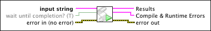

Run AppleScript Code VI
Owning Palette: Libraries & Executables VIs and Functions
Requires: Base Development System (macOS)
Executes AppleScript code to communicate with external macOS applications from LabVIEW.
AppleScript is a scripting language that enables you to control macOS applications as well as different parts of the OS. Use the Run AppleScript Code VI to request actions or return information from macOS applications external to LabVIEW using AppleScript code. For example, you can use this VI to communicate with Finder to set window settings or export data to a Microsoft Excel file.

 Add to the block diagram Add to the block diagram |
 Find on the palette Find on the palette |